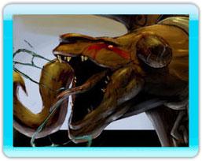
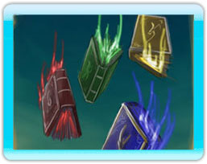

Terugkeer van de Draken
Drie eeuwen gingen voorbij voordat de oude allianties werden verbroken en oorlog de wereld van mensen verscheurde. Radeloos en vrezend voor verlies gebruikte de Arkhoni het Boek van de Klauw om de Draken te bevrijden en tegen de Daerovi te laten vechten. Maar het plan mislukte. Niet de Draken werden bevrijd, maar de Draken Meesters. De machtige Draken Meester van de Aarde, de wilde Draken Meester van de Storm, de eeuwige Draken Meester van het Water en de woeste Draken Meester van het Vuur, ontstaan als eerste van hun soort en de oorsprong van alle magie, werden los gelaten in de wereld van de mensen.
De vloek van de mensen
Door de Draken met elkaar te laten vechten brak men de natuurlijke orde in de wereld van Nakiha. De stomheid van de mensen bracht een nieuwe Draken Meester voort, de Draken Meester van de vernietiging! Voordat een kampioen een Draken Meester kan worden moet deze nieuwe verschrikking verslagen worden.
De Draken oorlog
De toekomst van de Draken bepaald het lot van de mensheid. De regerende machten hebben hun kampioenen geselecteerd en toevertrouwd met een van de Draken Boeken, waarmee ze de Draak kunnen beheersen, tot slaaf maken, verbannen of bevrijden. Je moet je eigen kampioen kiezen en de magie en de krachten van de Draken Meesters gebruiken om alle Boeken samen te brengen en daarmee de toekomst van Nakiha veilig te stellen, als Draken Meester!